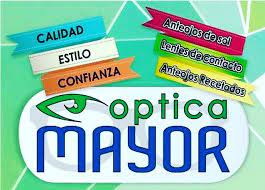

¿Quiénes Somos?
Comercio ubicado en Neuquén Capital donde le ofrecemos a los distintos clientes una gama amplia de productos para el cuidado de la salud visual y como también para corregir la visión de estos.
Contamos con multimarcas reconocidas nacional e internacionalmente, distintos proveedores que nos brindan las mejores opciones en cuanto a correción visual para poder ofrecerle al cliente.

Novedades
La colección Tour de France de Oakley® se inspira en el patrón geométrico del trofeo de esta emblemática carrera. La colección, que cuenta con modelos superventas, como Oakley Kato, Jawbreaker, Sutro Lite y Holbrook™, se asemeja al elegante diseño y color del trofeo, lo que la convierte en ideal para un campeón.
La familia Sutro crece con una versión de media montura del popular modelo para ofrecer un campo de visión más amplio. Inspirada en la vida cotidiana de los ciclistas urbanos, la pantalla envolvente crea un aspecto llamativo y versátil, protege de las inclemencias del tiempo y mejora la visión con la tecnología de lentes Prizm™, a la vez que inspira a los deportistas a moverse con seguridad y fluidez a lo largo del día.